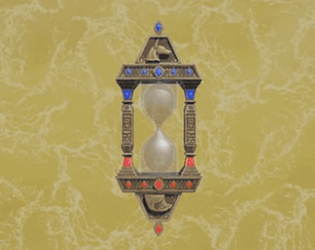
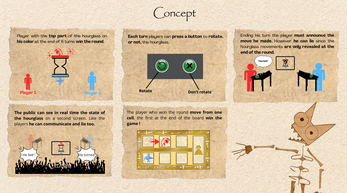
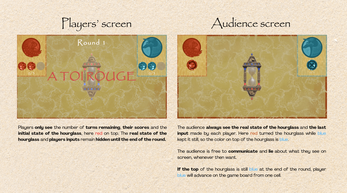
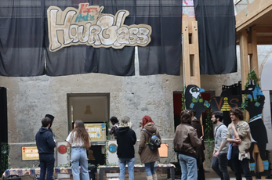

About the game
Hourglass was a physical installation inspired by TV shows (it involves the audience) made during the Angouniarof 2025, while still playable by downloading the build it won't fully replicate the original experience.
My Contributions
I mostly did the "front-end" of the project, mainly the hourglass display but also UI.
For this game I discovered and experimented a lot with DoTween in Unity.
Gallery



